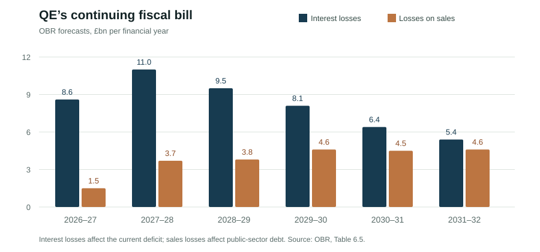

John Healey’s first Budget left just £15bn of headroom against the government's fiscal rule for 2029–30. Tucked into its financing annex was a proposal, first outlined in September, to change how the Bank of England sells bonds acquired during quantitative easing (QE). It raises an awkward question: is cheaper borrowing today worth greater exposure to interest rates tomorrow?
QE was lucrative when rates were close to zero. The Bank bought gilts with newly created reserves, receiving interest on the bonds while paying little on the reserves. By September 2022 its Asset Purchase Facility (APF) had transferred almost £124bn to the Treasury. As Bank Rate rose, the arrangement went into reverse; rising gilt yields also depressed the market value of the Bank's holdings.
The Office for Budget Responsibility (OBR) forecasts APF interest losses of £11bn in 2027–28 and £8.1bn in 2029–30. Losses realised on bond sales will also increase public-sector debt. The £8.1bn is already included in the forecast underpinning Healey's £15bn fiscal buffer, not another sum to subtract from it. Nonetheless, QE remains a substantial fiscal exposure.

The Budget proposes a possible change to the unwind. Rather than sell selected gilts directly to investors, the Bank could sell them at market prices to the Debt Management Office (DMO). The Treasury would cancel the purchased bonds and finance them with replacement debt. Implementation could begin in April 2027, though no final decision has been taken. Around £146bn of gilts, measured at original purchase proceeds, are earmarked for active sales; much of the rest will be held to maturity.
The manoeuvre cannot erase losses or eliminate the need for private financing. It could, however, change the maturity of the bonds investors buy. On 29 October, fitted zero-coupon gilt yields stood at 4.46% for one year, 5.28% for ten and 5.70% for thirty. Shorter debt looks cheaper at issuance, but must be refinanced sooner. The difference between initial cost and eventual cost matters.
The Treasury's current financing programme already leans towards shorter maturities. In the 2026–27 issuance remit, planned sales of short-dated conventional gilts rose to £107.6bn, while those of long-dated gilts fell to £15.5bn. That is a separate decision, not proof that the APF replacement debt will also be short-dated.
There is another complication. QE has already left the public sector exposed to short-term rates because the reserves financing it are remunerated at Bank Rate. Replacing some reserves with fixed-rate gilts could reduce that immediate sensitivity, even if the gilts mature relatively soon. The relevant comparison is not simply between short and long bonds, but between the financing risks of the present arrangement and its alternatives.
Those risks cannot be separated from inflation. Since the conflict with Iran disrupted energy supplies and shipping, higher oil and gas prices have raised the cost of fuel, heating and production. This is cost-push inflation: businesses face higher input costs and can pass some of them on to consumers. If the shock persists, it may also influence wages and domestic prices, complicating the Bank of England's task of returning inflation to 2%.
The OBR expects inflation to peak at 3.8% in early 2027 before returning to target in 2028. Its central forecast assumes oil prices fall towards $70–75 a barrel by 2028 and gas prices retreat substantially. These are paths implied by futures markets when the forecast was prepared, not promises of peace. Indeed, prices had risen again by the time the OBR finalised its report.
That exposes an uncomfortable geopolitical dependency. As of 2 November, US–Iran contacts mediated through Qatar had ended without a breakthrough. Donald Trump faces choices between diplomacy and further confrontation, while Tehran, Israel and Gulf governments have decisions of their own to make. Even a settlement would not immediately restore damaged infrastructure or shipping confidence. None of these decisions is in Healey's hands.
The OBR's severe energy-shock scenario illustrates the stakes. It envisages oil above $100 a barrel throughout 2027 and inflation reaching around 6%. In an accompanying financial-conditions scenario, Bank Rate and gilt yields rise roughly one percentage point above the central path, increasing debt-servicing costs. These are stress-test assumptions, not predictions.
Nor does the central forecast depend on imminent interest-rate cuts. On the contrary, it assumes Bank Rate rises above 4.25% by mid-2027, even as energy prices eventually decline. Healey has not committed to replacing APF gilts with predominantly short-term debt, let alone to betting on a ceasefire. But should the Treasury opt for frequent refinancing, prolonged energy inflation would make that choice costlier.
The arithmetic is tight. The OBR estimates that a one-percentage-point rise in gilt yields on new debt and expected Bank Rate across the forecast would add £13bn to the current budget deficit in 2029–30—almost the entire fiscal buffer. That sensitivity applies to the public finances as a whole, not solely to the proposed APF transaction.
The Budget's overlooked proposal may give the Treasury more flexibility over its debt. Whether it offers lower risk as well as lower initial costs will depend on the maturities eventually chosen. In a world where British borrowing costs can be moved by events in the Gulf, those are not the same thing.